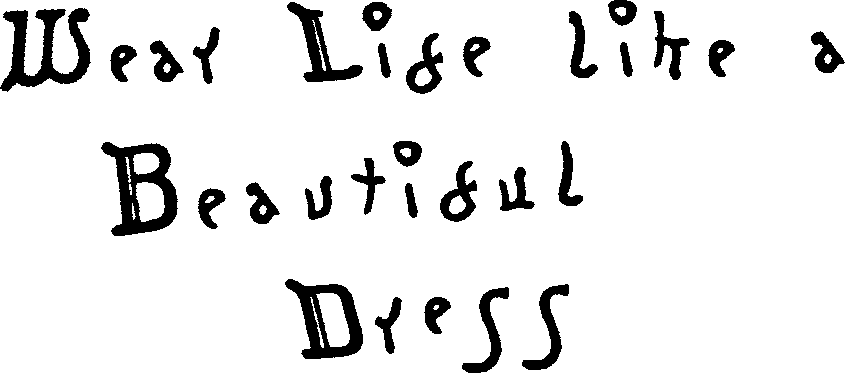
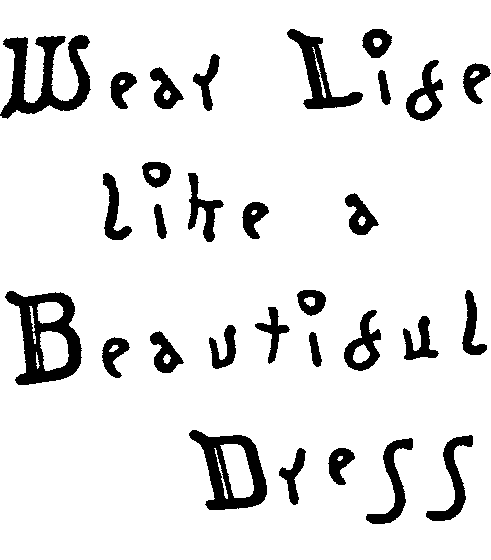

These songs have no fixed abode. They shift, and transform, and the album that contains them alters it's shape in response. They are connected, but not enough to warrant an album together. I felt drawn to writing songs that could stand on their own, without being part of some bigger entity, yet still being part of a whole... all that I've made.
So I used this format as a way to represent that. They are part of something bigger, but they also exist on their own, and can evolve, unconstrained by the fixed context of an ‘album’.
Including
current era _
(debug)
(debug)
Title Track